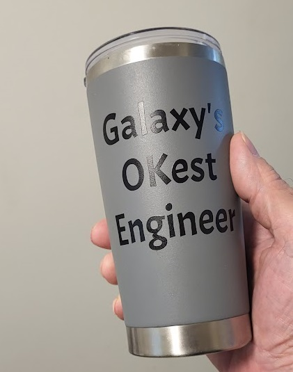

Spyder built Dauntless using equal parts reckless optimism, garage-sale electronics, and whatever had survived three moves and a failed attempt at home kombucha. The vessel was, only by the most liberal and forgiving of definitions, a boat. By Spyder’s, it was a cross between a shuttlecraft and a mechanical dare.
The Dauntless—a pontoon boat surgically modified to resemble a Star Trek shuttlecraft—waited in the morning sun. Spyder, hair worn long in pure defiance of protocol, did one last circuit of switches, antennae, and a sticker reading "Don't Panic!" He warmed his hands around a much-abused coffee cup emblazoned with: "Galaxy's OK'est Engineer." The only thing stronger than his coffee was his faith in the next adventure. He grinned at the half-asleep Wayne, who nursed his own caffeine like a relic, and Vanessa, who wore sunglasses indoors and attitude in all weathers.
Wayne (teasing): "I see you brought your trophy mug."
Spyder (deadpan): "They gave it to me after I survived the SUNY Binghamton translation from NCP to ARPANET's TCP."
Vanessa: "That makes you about five nines reliable, right?"
Spyder: "It’s all about setting expectations."
Ready for launch!
Athena (overhead): “Welcome aboard the Dauntless. Crew credentials accepted under protest. System briefing follows.”
Athena: “Last diagnostic revealed 3 logic errors and a coffee stain in core memory.”
Athena: “FRED once attempted diplomacy with a Canadian goose. Outcome: inconclusive.”
Athena: “Energy reserves are...subjective.”
Athena: “Detected anomaly last week. Spyder called it ‘vibes.’”
Athena: “Interface rejected banjo input. I stand by that decision.”
Athena (closing): “Proceed if adventure outweighs survival instinct. Seat cushions are not flotation devices.”
Spyder’s ad read:
“Seeking: Crew for adventure. Must be unflappable, inventive, tolerant of bad coffee, odd music, and uncertain plumbing. No boating experience required—lack of it preferred, really. This will not be on the test. Must provide your own hat. Apply in person to 'Starship Dauntless,' dock C. No vampires or banjo players.”
Vanessa, a stunning 6 foot 1 force of nature in her own right, strolled into view wearing an outfit that screamed attitude. Her boots were made for walking into uncharted territories, and her sunglasses shielded eyes that had seen their fair share of cosmic weirdness. Her t-shirt, boldly proclaiming "Try Me," served as a challenge and a promise.
Wayne, ever the pragmatist, offered her a wrench and a mug — the twin tools of their trade — as she casually asked:
Vanessa: “Any Wi-Fi?”
“If you can reboot an army surplus laptop, you’re in,” Wayne said. “Welcome aboard, matey.”
Thus, the crew of the Dauntless was born — a trio of misfits united by their love for adventure and their ability to navigate the strange seas of life with nonchalance and a healthy, possibly inadvisable dash of madness.